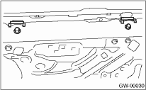
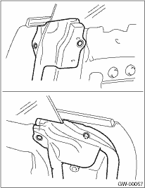
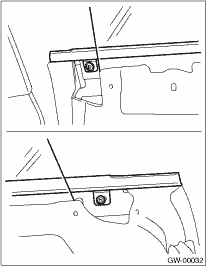
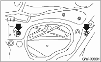

1. Remove the rear door trim. 
2. Remove the front speaker.
3. Remove the sealing cover.
4. Remove the stabilizer.

5. Remove the door weather strip.

6. Loosen two screws to remove the weather strip outer.

7. Operate the power window switch to move the glass to the position as shown in the figure, and remove two nuts.

8. Take out the door glass.
CAUTION:
Avoid impact and damage to the glass.